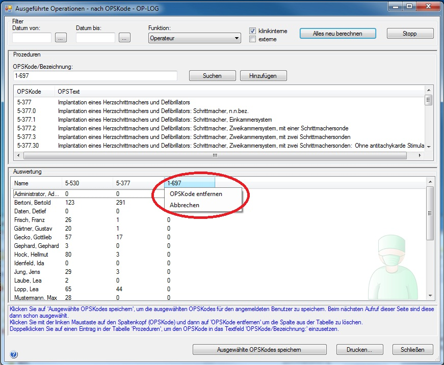

In diesem Fenster können Sie eine Anzahl von OPSKodes auswählen und sehen für jeden Chirurgen, wieviele von diesern Operationen er durchgeführt hat.
Geben Sie in das Feld OPSKode/Bezeichnung einen Text ein. Ab einer bestimmten Eingabelänge werden alle passenden Operationen in der Liste darumter angezeigt. Klicken Sie dann auf 'Hinzufügen', damit der eingegebene Text als zusätzliche Spalte in die Tabelle unten eingefügt wird und die Werte berechnet werden.
Klicken Sie auf 'Ausgewählte OPSKodes speichern', um die ausgewählten OPSKodes pro angemeldeten Benutzer zu speichern. Wenn Sie das Fenster erneut öffnen, werden die gespeicherten OPSKodes automatisch wieder geladen.
Klicken Sie auf die Spaltenüberschrift (auf den OPSKode) in der Tabelle unten, um die Spalte zu löschen.
Klicken Sie auf 'Alles neu berechnen' um nach Änderungen an den Filtereinstellungen wie z.B. dem Datum die Werte neu zu berechnen.